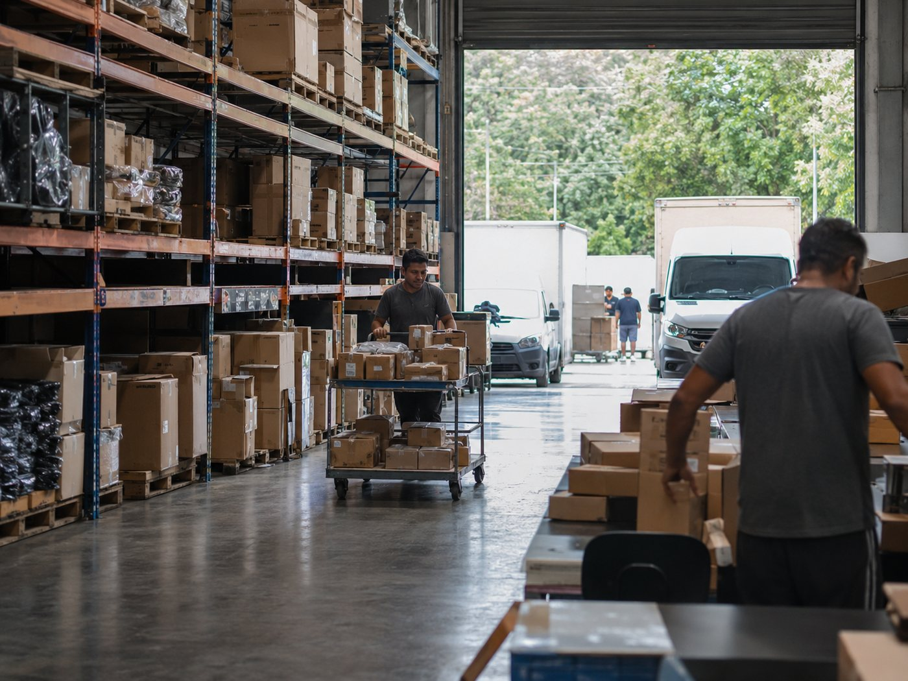

Muito pedido, muitas paradas, um prazo só: agora.
Distribuidora vive de densidade de rota e cumprimento de janela. A Grafos monta rotas eficientes para grandes volumes e acompanha cada entrega para o prazo não escapar.

Rota densa sem caos.
- Roteirização de alto volume respeitando janelas de entrega.
- Melhor aproveitamento de cada veículo e turno.
- Rastreamento em tempo real de todas as rotas do dia.
- Comprovante digital para reduzir divergências.
Na distribuidora, o erro não é grande. É repetido.
Uma parada mal encaixada custa pouco. Multiplicada por 40 paradas, 6 veículos e 22 dias úteis, vira o resultado do mês.
Rota montada no feeling
Quem monta a rota conhece a região, mas não consegue avaliar as combinações possíveis entre dezenas de paradas e vários veículos. O resultado é uma rota boa, quando poderia ser a melhor.
Janela perdida vira reentrega
O cliente só recebe até as 11h e o veículo chega meio-dia. A entrega volta ao CD e sai de novo no dia seguinte, com custo integral e margem zerada.
Veículo desequilibrado
Um motorista termina às 14h e outro faz hora extra. A frota parece pequena quando, na verdade, está mal distribuída entre as rotas.
O problema só aparece no fim do dia
Sem acompanhamento em tempo real, o atraso é descoberto quando o cliente liga ou quando o motorista volta. Cedo demais para reclamar, tarde demais para corrigir.
Volume alto, decisão rápida.
Suba os pedidos do dia
Planilha ou integração. Endereço, volume e janela de recebimento entram como restrição do cálculo, não como observação em campo de texto.
Roteirize em minutos
O algoritmo distribui as paradas entre os veículos equilibrando carga e jornada, e devolve a sequência de entrega de cada rota pronta para despachar.
Corrija ainda durante o dia
O painel mostra o andamento de cada rota. Atraso vira decisão no meio da tarde, não constatação às 19h.


Reentrega é o custo que ninguém orçou.
Uma reentrega consome combustível, ocupa espaço em outra rota e, com frequência, custa mais que a margem da venda que ela deveria concluir. As duas causas mais comuns têm solução direta:
- Chegar fora da janela de recebimento: tratado como restrição na roteirização.
- Ocorrência sem registro: comprovante digital com foto, horário e motivo padronizado.
- Endereço errado repetido: o histórico expõe o cadastro que precisa ser corrigido.
- Divergência com o cliente: o comprovante resolve na hora, não em uma semana.
O que a distribuidora pergunta.
Quantas paradas por rota a Grafos consegue calcular?
A roteirização foi desenhada para rotas densas, com dezenas de paradas por veículo, que é o cenário típico de distribuidora. O dimensionamento exato do seu volume é validado na demonstração, com os seus dados reais e não com um exemplo genérico.
O sistema respeita a janela de recebimento do cliente?
Sim. A janela entra como restrição do cálculo, junto com capacidade do veículo e região. Chegar fora da janela é uma das maiores causas de reentrega, e por isso é tratada como regra, não como sugestão.
Dá para replanejar a rota durante o dia?
O acompanhamento em tempo real mostra o andamento de cada rota, o que permite identificar atraso e redistribuir entregas ainda no expediente, em vez de descobrir o problema no fechamento.
E se a operação tiver pico sazonal?
O ganho da roteirização automática cresce justamente no pico, quando montar rota à mão fica inviável. Na demonstração vale simular o seu pior dia do ano, não o dia médio.
Deixe a rota da sua distribuidora com a Grafos.
Agende uma demonstração e simule um dia de pico com os seus números: volume de pedidos, veículos disponíveis e janelas de recebimento.
Agendar demonstração